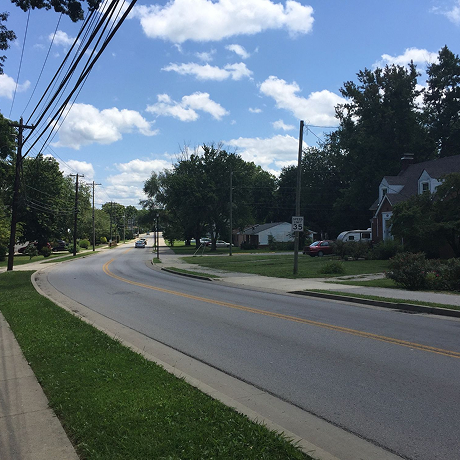
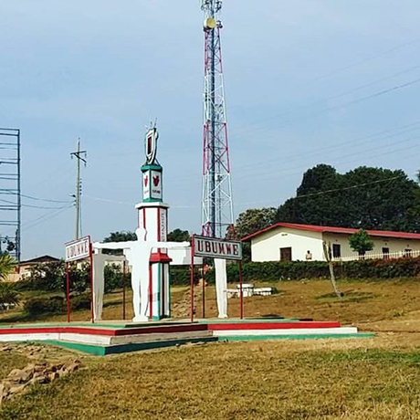
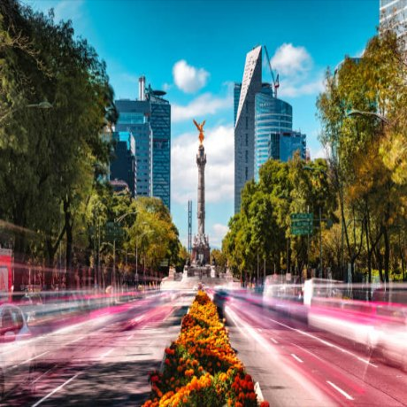

ancho: porcentaje de su contenedor, margen izquierdo y derecho:
auto
De patria a patria

ancho: porcentaje de su contenedor. Los otros son iguales. los
margenes vertiaclaes son por su cuenta, estan en figma. Les deseo
lo mejor!
Conoce un poco mejor los lugares de los que proceden tus colegas en
línea
Todo ser humano es un artista, un ser de la libertad, llamado a participar en la transformación y reforma de las condiciones, el pensamiento y las estructuras que conforman e influyen en nuestras vidas.
La ciudad de TripleTen ha reunido a profesionales de diferentes rincones del mundo. Hoy, la Galería de Arte TripleTen se enorgullece de presentar historias y fotografías de algunas de las personas que dedican su tiempo y esfuerzo a hacer que los futuros profesionales de la tecnología de esta ciudad se sientan como en casa. Cada uno de nosotros tiene una historia única sobre el lugar del que procede. No dudes en añadir a nuestra colección tu propia historia y una obra de arte visual dedicada a tu ciudad natal. No importa de dónde seas, nos alegra que seas nuestro vecino.
grid-col: 1 grid-row: 1
Cricieth, Gales
grid-column: 1 grid-row: 3
Compra esta obra como NFT
grid-template-columns: Xfr Yfr
grid-template-rows: repeat(4, auto)
Hay que darle el ancho adecuado a las columnas.
grid-column: 2 grid-row: 1
Artistas
Steffan Warren, editor jefe
Kseniya Glagoleva, gerente de proyectos
grid-column: 2 grid-row: 2 / span 3
Las ruinas medievales del castillo de Cricieth dominan la ciudad desde una roca que extiende sobre el mar. Se cree que fue construido por Llewelyn el Grande en el S. XIII. 800 años después, la autodenominada Perla de Gales en las costas de Snowdonia, se ha convertido en un popular destino turístico durante los meses de verano.
A pocos pasos de camino al castillo, puedes disfrutar de los mejores helados del mundo en Cadwalader's, cuyo ingrediente secreto se rumorea que son algas marinas de la localidad. Otra cosa por la que es famosa Cricieth es por haber ganado el premio *Gales en flor* durante cinco años seguidos por sus espectaculares muestras florales alrededor de la ciudad. También vio nacer a David Lloyd George, el único galés que ha sido Primer Ministro del Reino Unido.
Berea, EE. UU.
Compra esta obra como NFT
Artistas
Travis Turner, autor y editor
Berea es una pequeña ciudad ubicada en la parte central de Kentucky. La ciudad está rodeada por hermosos bosques y campos. Es conocida como la capital de la artesanía del estado, y sus visitantes hallarán infinitas posibilidades para ir de compras: tiendas de joyas, velas y artículos de madera artesanales; galerías, talleres de vidrio y más. La ciudad celebra un festival anual que rinde tributo al "spoonbread", un platillo local hecho de pan de maíz y que se sirve con una cuchara de madera.
Aunque, probablemente es mejor conocida por su universidad. El Berea College fue fundado en 1855 y fue la primera universidad sureña integrada racialmente, así como la primera en ser coeducacional. Algo que en cierta manera la hace única, es que no cobra colegiatura: cada estudiante recibe una beca del 100%.
Muramvya, Burundi
Compra esta obra como NFT
Artistas
Grevisse Kenguruka, editor técnico
Muramvya es una de las 18 provincias de Burundi. Durante la época del reino, Muramvya fue su capital; y en 2017, gracias a su paisaje cultural y natural, se añadió a la Lista provisional de patrimonio mundial de la UNESCO. Se encuentra ubicada en el centro de Burundi, entre las capitales política y económica del país.
Su clima es más bien frío durante la noche, pero durante el día, podrías pensar que estás en el paraíso. A sus 2,665 metros (8,743 ft) sobre el nivel del mar, el Monte Teza es uno de los lugares más fríos de la provincia. Pero es justo esa brisa fresca la que da pie a una de las más grandes plantaciones de té y café del país, y que representa la mayoría de las exportaciones de Burundi.
El Parque nacional de Kibira, una de las mayores reservas de vida silvestre para los simios, ocupa parte de cuatro provincias, incluyendo Muramvya. Este parque nacional se encuentra en las cúspides de las hermosas montañas de la Divisoria Congo-Nilo, cuyas alturas oscilan entre 1,550 y 2,660 metros. Está lleno de hermosa vegetación, y es una fuente para los diversos ríos y arroyos que proporcionan agua alrededor del país.
CDMX, México
Compra esta obra como NFT
Artistas
Sergio Verástegui V., Web Developer
La Ciudad de México, antes llamada también México, Distrito Federal (México, D. F.), es la capital de los Estados Unidos Mexicanos, sede de los Poderes de la Unión; una de las entidades federativas que, junto con los treinta y un estados, conforman el país. Está dividida en dieciséis demarcaciones territoriales. Se localiza en el valle de México en la región centro sur del país; colinda al norte, oeste y este con el Estado de México y al sur con Morelos.
La Ciudad de México representa el principal centro político, económico, social, académico, financiero, empresarial, turístico, cultural, de comunicaciones y de entretenimiento en México; dicha relevancia la traslada al escenario internacional al estar catalogada como una ciudad global nivel «alfa», esto al proyectar sus elementos ponderados en las zonas de influencia donde destaca su país (continental, mundo hispano, regional y economías emergentes), siendo en términos absolutos la 44.ª del planeta en poderio.